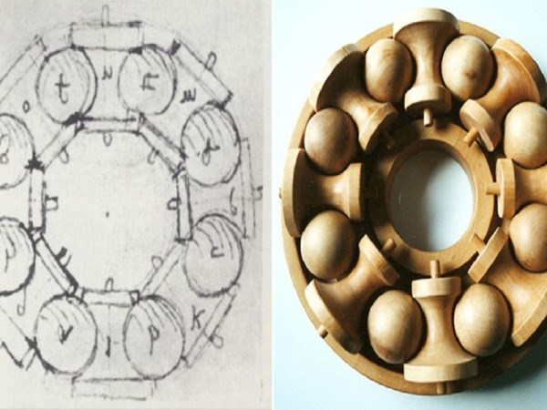
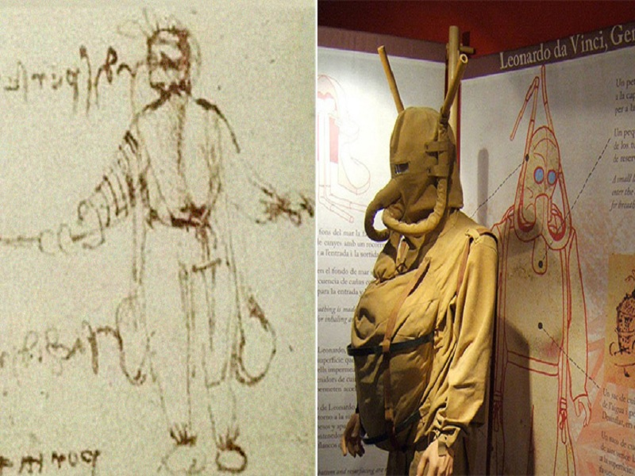
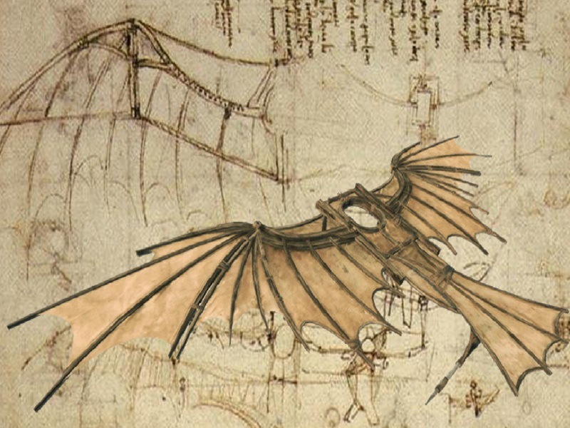
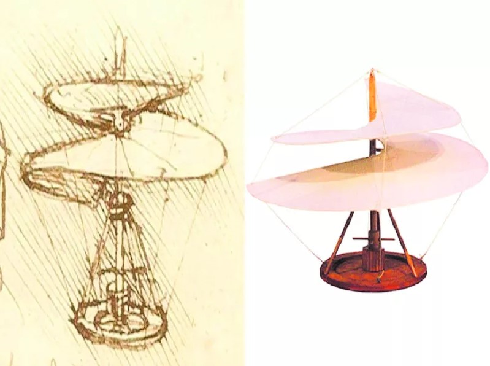

Leonardo da Vinci Portfolio oficial
Quem sou
Sou Leonardo di Ser Piero da Vinci, nasci em 15 de abril de 1452, fui um polímata nascido na atual Itália, fui um dos personagens mais importantes do Alto Renascimento.
Habilidades
- Cientista
- Matemático
- Engenheiro
- Inventor
- Anatomista
- Pintor
- Escultor
- Arquiteto
- Botânico
- Poeta
- Músico
Sobre Um pouco da minha história
Sou filho ilegítimo de um notário, Piero da Vinci, e de uma camponesa, Caterina. Nasci em Vinci, na região da Florença, fui educado no ateliê do renomado pintor florentino, Verrocchio. Passei a maior parte do início da vida profissional a serviço de Ludovico Sforza, em Milão. Também trabalhei em Veneza, Roma e Bolonha, e passei meus últimos dias na França, numa casa que me foi presenteada pelo rei Francisco I.
Sou conhecido até hoje, principalmente, como pintor. A Mona Lisa e A Última Ceia são as minhas pinturas mais famosas, também são as mais reproduzidas e mais parodiadas de todos os tempos, e a fama se compara à Criação de Adão, de Michelangelo.
Portfolio Algumas coisas que eu fiz
-

Rolamento
Apesar da existência de rolamntos ser datada de período anterior ao nascimento de Cristo, Leonardo da Vinci aprimorou o dispositivo para diminuir a fricção entre as esferas. Hoje os rolamentos são encontrados em praticamente tudo.
-

Escafandro
O equipamento de mergulho, o objetivo era possibilitar o ataque de embarcações por baixo. O traje foi imaginado em couro, com visor de vidro e canal respirador (snorkel) feito em cana.
-

Ornitóptero
É um equipamento de voo que obtém a sistentação e a propulsão a partir do movimento alternativo das asas, como ocorre com algumas aves e/ou insetos.
-

Helicóptero
Também conhecido como "parafuso voador", este helicóptero de Da Vinci é considerado uma de suas invenções mais estranhas e, de acordo com os cientistas, de pouca utilidade.